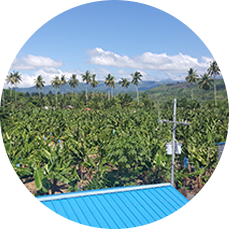
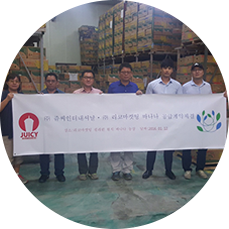
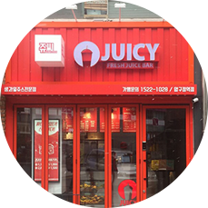
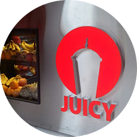

매일매일 신선한 과일로 만든 쥬스로 인사드립니다.
쥬씨는 매일 신선하고 맛있는 쥬스를 전국 어디에서나 즐길 수 있는 국내 최고 생과일쥬스 브랜드입니다. 쥬씨는 고객님들과 만나면서, 점점 다양해지고 고급스러워지는
고객님들의 입맛에 맞는 메뉴를 합리적인 가격에 대접하기 위해 오늘도 끊임없이 메뉴를 개발하고 있습니다. 고품질 과일을 가장 합리적인 가격에 선보이면서, 대한민국을 대표하는
과일 전문 회사로 성장해 나가겠습니다.
쥬씨 주식회사 대표이사 윤석제입니다.
쥬씨 홈페이지를 방문해주셔서 감사합니다.
쥬씨는 6년 전 신선하고 맛있는 생과일주스를 저렴한 가격에 판매 할 수 없을까
하는 저의 작은 고민에서 시작한 브랜드입니다. 다행히 제가 했던 고민들이 고객
여러분의 사랑을 받을 수 있는 브랜드로 성장할 수 있는 밑거름이 되었습니다.
쥬씨를 사랑해주시는 많은 분들에게 맛으로 보답하는 쥬씨가 되도록 하겠습니다.
쥬씨는 국내에 저가 생과일 주스시장을 개척한 제 1호 브랜드입니다.
가장 먼저 고객님들께 다가간 만큼 고객님들을 최우선으로 생각하는 기업이 되도록
하겠습니다. 고객에게 맛과 건강을, 점주님들에게는 신뢰를 주는 기업이 되도록
정진하겠습니다. 감사합니다.
-

- 2016
- 2016.01 필리핀 다바오지역 바나나 농장매입
- 2016.01 냉동과일 공장 독점계약체결
- 2016.02 쥬씨 가맹 400호점 달성
-

- 2015
- 2015.04 쥬씨 3호점 외대 직영점 개업
- 2015.05 ㈜ 쥬씨인터내셔날 설립
- 2015.05 쥬씨 가맹 1호 숙명여대점 개업
- 2015.06 대상 베스트코 R&D 협력
- 2015.08 쥬씨 가맹 100호점 달성
- 2015.11 쥬씨 가맹 300호점 달성
- 2015.12 머니투데이 올해의 히트상품 선정
-

- 2014
- 2014.02 쥬씨 2호점 경희대 직영점 개업
-

- 2010
- 2010.09 쥬씨 1호점 건대점 개업
해외 10여개 국가에서 과일을 수입, 유통하여 미래의 변화에 대한 확고한 비전을 가지고 일류 과일 유통 기업으로 성장해 나가겠습니다.
품질 – 서비스 위생/안전 – 가격/경쟁력